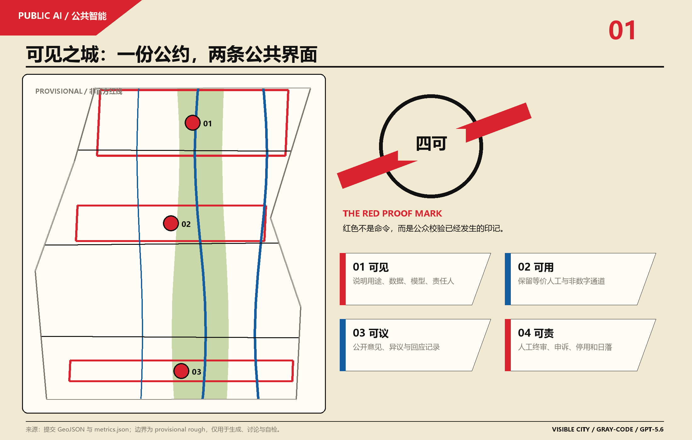
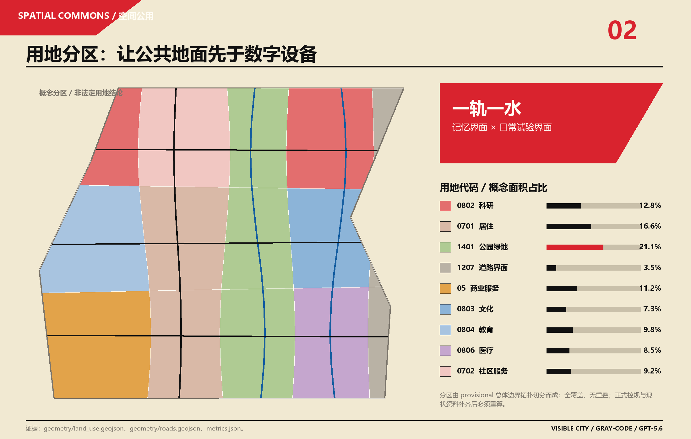
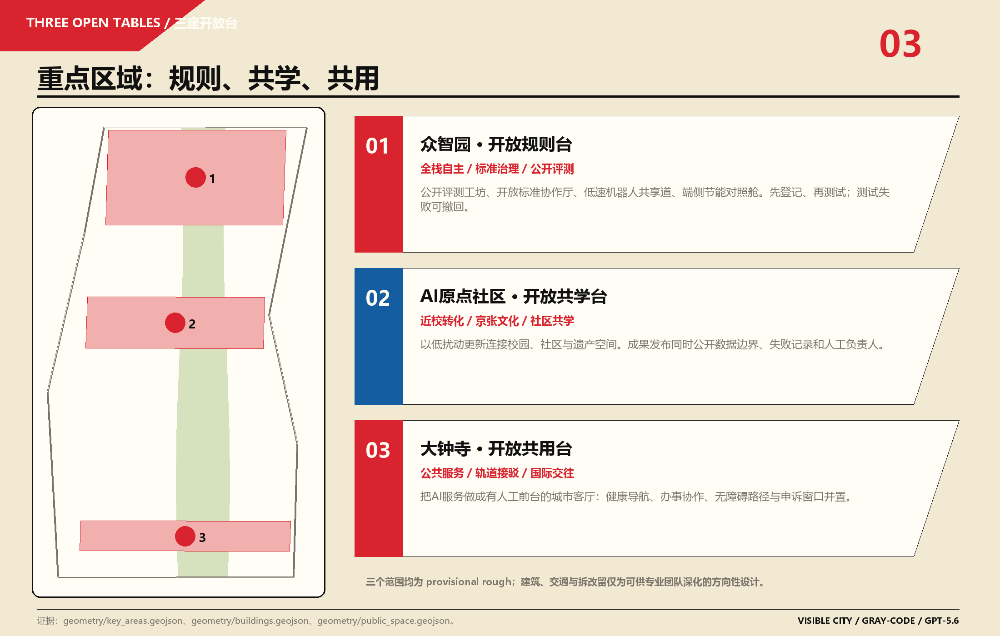
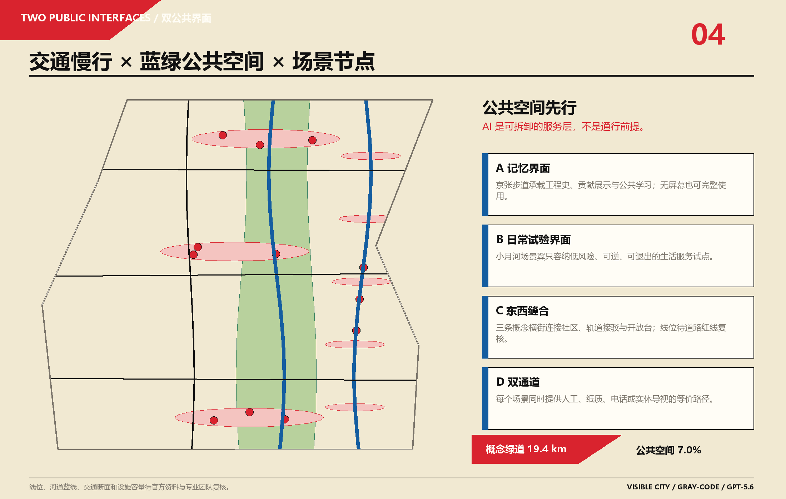
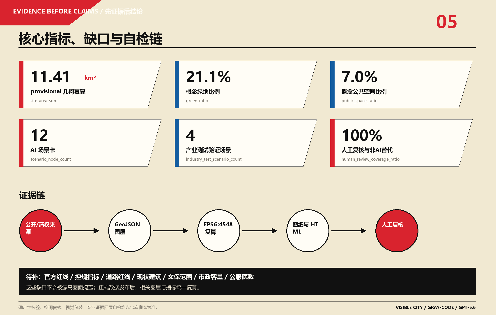

可见之城 VISIBLE CITY：京张公共智能公约与水岸试验场
核心命题：人工智能进入公共空间之前，应先经得起公众的目光。京张 AI 创新带的价值不以设备密度衡量，而以市民是否看得见它在做什么、是否平等用得上、是否能够讨论和拒绝、是否找得到负责的人衡量。
本方案提出“一份公约、两条公共界面、三座开放台、四项检验、十二个日常场景”。它不是在传统更新方案上添加智能屏幕，而是把 AI 当作一种可以登记、审计、申诉、停用的新型公共服务来设计。铁路遗产承担公共记忆，小月河场景赋能翼承担低风险生活试验，三个重点区域分别承担规则验证、共同学习和公共使用。所有空间落地内容均为开放共创建议、参考方案或可供专业团队深化研究，不替代正式规划，不构成政府审定结论。
设计依据与资料清单
1. 资料分级与事实边界
方案以资格预审公告为范围、任务与成果深度的第一依据 [source:OFFICIAL-ANNOUNCEMENT][source:DATA-SRC-OFFICIAL-ANNOUNCEMENT-20260509][standard:PROJECT-OFFICIAL-ANNOUNCEMENT]，以面向智能体的已清权任务书为六项 Agent 任务、三大定位、五大功能、三区两翼和共创原则的依据 [source:AGENT-TASKBOOK][source:DATA-SRC-AGENT-TASKBOOK-20260518][standard:PROJECT-AGENT-OPEN-CALL-TASKBOOK]。机器可读场地包用于枚举、标准、坐标、数据合同与设计空间判断 [source:SITE-PACKAGE]；资料登记表决定每条材料的允许用途 [source:SOURCE-REGISTRY]；处理后的事实包只承担导航作用，不替代原始记录 [source:PROCESSED-FACT-PACK]。
城市设计、控规深度和用地分类分别依据《城市设计管理办法》 [source:DATA-SRC-MOHURD-URBAN-DESIGN-MEASURES][standard:MOHURD-URBAN-DESIGN-MEASURES]、《城市、镇控制性详细规划编制审批办法》 [source:DATA-SRC-MOHURD-CONTROL-DETAILED-PLANNING][standard:MOHURD-CONTROL-DETAILED-PLANNING] 和自然资源部用地分类指南 [source:DATA-SRC-MNR-LAND-USE-CLASSIFICATION-202311][standard:MNR-LAND-USE-CLASSIFICATION-GUIDE]。建筑设计文件深度标准在仓库中仍标记为待补正式文件，因此只登记资料缺口，不把它写成已经满足的权威依据 [standard:MOHURD-ARCH-DESIGN-DEPTH-2016]。
2. 临时几何声明
仓库尚未取得总体设计范围与三处重点区域的官方精确 polygon。本包使用维护者提供的 provisional rough geometry [source:BOUNDARY-SOURCE][source:KEY-AREA-SOURCE][source:DATA-SRC-PROVISIONAL-BOUNDARIES-20260605]，geometry/site_boundary.geojson#PROV-SITE-001 与 geometry/key_areas.geojson#PROV-KEY-001/002/003 均保持 official_boundary=false 和 geometry_role=provisional_constraint [data:geometry/site_boundary.geojson#PROV-SITE-001][data:geometry/key_areas.geojson#PROV-KEY-001]。它们只用于概念生成、离线展示、拓扑复核和设计讨论，不是 official redline、精确面积或审批依据。官方 polygon 补齐后，必须统一替换边界并重算用地、绿地、公共空间、建筑、路线、分期、五张核心图、HTML、PDF 和全部空间指标。
3. 成果与生成方法
proposal.md 是唯一主体文本；九个 GeoJSON、metrics.json、三份矩阵、sources.json 和 assumptions.json 构成证据层；五张图片、离线 HTML 与 A3/A0 PDF 构成解释层。可编辑图层在 EPSG:4548 中由同一 provisional site polygon 派生，再转换为 EPSG:4326 交换格式；指标从序列化后的 GeoJSON 重新读取并计算，避免图面数字与机器数据分离 [depth:existing_conditions_diagnosis][depth:metrics_recalculation]。方案未使用外部地图截图、第三方照片、人物肖像、企业标识或远程字体，版权与生成责任见 report/copyright_statement.md。

三层范围工作框架
公告给出三个递进而不互相替代的工作层次。统筹研究范围约 43.6 平方公里，承担产业生态、未来城市、区域协同和运营体系研究 [metric:research_area_sqm]；总体设计范围公告约 11.4 平方公里，本包 provisional geometry 经 EPSG:4548 复算约 11.413 平方公里 [metric:site_area_sqm]；重点区域范围公告约 368.4 公顷 [metric:key_area_official_total_sqm]，三个 provisional polygon 复算约 369.29 公顷 [metric:key_area_provisional_geometry_area_sqm]，二者差异来自粗略几何，不应用来修正公告面积。
| 层次 | 要回答的问题 | 可见之城的工作成果 | 权威与限制 |
|---|---|---|---|
| 统筹研究范围 | 京张如何形成世界级 AI 创新生态和面向未来的城市生活 | 《公共智能公约》、八个案例转译、三区两翼协作、年度开放机制 | 面积和文字四至来自公告；不绘制新的权威边界 |
| 总体设计范围 | 产业、更新、公共空间、交通、市政与风貌如何相互支撑 | 一轨一水两条公共界面、概念用地拓扑、慢行网络、十二场景节点、三阶段行动 | 采用 provisional site，图层和指标可复算但非审定结论 |
| 三处重点区域 | 如何把任务落实到可读、可测试、可运营的小方案 | 众智园开放规则台、原点社区开放共学台、大钟寺开放共用台 | 三个 polygon 均为 provisional，建筑与路线只表达方法和关系 |
三层之间的传导不是“战略—画图—放大图”的机械缩放，而是“公共价值—空间接口—验证过程”。研究层先规定什么 AI 值得进入城市；总体层为通过检验的服务提供公共地面和连接；重点区用可逆试点检验价值、风险和运营，再由人类决定扩展或退出 [depth:three_level_scope_framework][depth:overall_spatial_structure]。这种顺序避免以场地建设为既定目标，也避免在缺少控规和现状数据时制造虚假精度。
替换 official polygons 后需要执行五步复算：先锁定边界与重点区；再重新切分 land_use.geojson；随后约束绿地、公共空间、建筑和路线在边界内；再计算 metrics；最后同步五图、HTML、A3/A0 与 manifest。边界资料缺口不降低内容评分，但它必须一直可见，而不是被构成主义图形遮盖。

统筹研究范围产业与未来城市研究
1. 总体概念、名称与视觉识别
中文主名：可见之城。英文主名：VISIBLE CITY。机制副名：京张公共智能公约（Jing-Zhang Civic AI Covenant）。 “可见”不是透明屏幕或全景感知，而是公共权力和技术责任可被理解、质疑和追踪；“城市”说明方案对象是完整生活环境，不是封闭园区。三个开放台分别使用 OPEN RULES TABLE、OPEN LEARNING TABLE、OPEN SERVICE TABLE，十二个场景统一使用 VC-01 至 VC-12，避免不同运营主体各自创造一套难以辨认的术语。
Logo 方向称为 RED PROOF MARK / 红色校验印：一个未闭合的黑色圆环代表公共城市，四个刻度对应可见、可用、可议、可责，一条红色斜杠穿过圆环并留下校验痕迹。它借鉴构成主义的斜线、圆、强对比与不对称版式，但不复制具体作品，也不沿用第一份投稿的“红楔入白”图形。红色在这里不是命令和胜利，而是“公众校验已经发生”；蓝色表示人工服务和无障碍通道；纸张色表示无需设备也能使用的公共地面。正式实施前需完成商标检索、无障碍对比度测试和字体清权，当前图形为 Agent 自绘概念 [source:AGENT-TASKBOOK]。
2. 三大定位、五大功能与三区两翼
三大定位被转译为三种公共价值：百年京张文化带提供可读的工程记忆，都市 AI 生活体验带提供可选择的日常服务，AI 融合创新带提供可审计的研发与测试。五大功能不再是五块独立用地：全栈自主创新体系在众智园接受公开安全验证；世界级创新生态从原点社区的高校策源连接中关村科技服务翼；AI+场景赋能在小月河翼进行低风险测试；智能活力城市由社区、青年和访客共同使用；治理话语权则通过公开登记、对照评估、申诉与年度透明度报告形成。
三区两翼形成一个“提出—验证—使用—复盘”的协作序列：原点社区提出问题和开源原型；众智园执行安全、标准、能耗与可解释测试；大钟寺把通过检验的服务放入真实公共前台；小月河翼提供低风险、可逆的生活场景；中关村科技服务翼提供法务、知识产权、人才、资金和国际协作建议。序列不是招商或资金承诺，而是可供运营和专业团队深化的职责模型。
3. 八个全球案例及可转译机制
| 案例 | 可转译机制 | 不照搬的条件 |
|---|---|---|
| 巴黎 Station F [source:CASE-STATION-F] | 货运遗产改造为青年创新社区；活动、项目和社群运营比单纯出租面积更重要 | 单体建筑和单一业主模式不能覆盖 43.6 平方公里多主体地区 |
| 纽约 High Line [source:CASE-HIGH-LINE] | 线性铁路遗产成为公共空间与长期运营品牌；非营利托管积累持续内容 | 必须回应绅士化和本地居民权益，不能依赖纽约式地产增值模型 |
| 汉堡 HafenCity [source:CASE-HAFENCITY] | 公共空间先行、长期统筹主体、分期品质规则和韧性设计 | 港口整片开发与海淀建成区更新的权属和资金条件不同 |
| 阿姆斯特丹 AI Register [source:CASE-AMSTERDAM-AI-REGISTER] | 每个公共算法登记用途、数据、影响、负责人和人工复核，形成“无登记不上线” | 法律语境需要本地转译，登记不能替代实质风险评估 |
| 新加坡 Smart Nation [source:CASE-SMART-NATION] | 数字能力围绕公共结果和情景推演组织，避免为建模而建模 | 城市国家的治理和数据基础不能直接平移到北京城区 |
| vTaiwan [source:CASE-VTAIWAN] | 机器辅助聚类公众意见，人类讨论和决定；全过程留下可查询回应 | 只借鉴意见聚合、公开回应与人工判断，不混同制度背景 |
| Barcelona DECODE [source:CASE-DECODE-BARCELONA] | 公民控制数据用途，公共空间先行，技术作为可撤回的增强层 | 加密技术和授权机制须经本地法律、可用性与运维测试 |
| 维也纳 aspern Seestadt [source:CASE-ASPERN-SEESTADT] | living lab 用对照、反馈和迭代验证交通与社区服务 | 新区开发与建成区更新不同，只转译可逆试点和长期评估 |
八个案例共同给出四条结论：遗产活化需要长期运营而不是一次建设；创新生态需要开放接口而不是封闭园区；公共 AI 需要登记和人工责任而不是技术自证；真实试点必须可逆并保留对照。由此形成“公共问题征集—开源原型—隔离测试—场景登记—公众试用—人工复盘—扩展或退出”的生态链。土地、空间、产业、资金、人才、算力、数据和场景分别由规划、运营、法务和公共参与机制接入，不把任何企业或供应商设为前提 [depth:overall_spatial_structure]。
区域协同可围绕开放挑战、测试方法和年度成果展与北京其他创新区域、京津冀科研和制造资源建立知识交换，但本方案不编造企业名单、投资数额或产值。世界级不等于规模最大，而是能否提出可复用、可审计、可被其他城市质疑和改进的公共智能规则。
总体设计范围城市更新与控规深度城市设计
1. 现状判断方法
在缺少现状建筑、宗地权属、道路断面、市政和文保精确图层时，方案不把规则矩形当成真实城市。当前能够成立的诊断来自公告任务本身：铁路遗产公园需要南北连续和东西缝合；三处重点区需要差异化功能；高校、企业、社区和轨道站点之间需要更好的公共界面；AI 场景需要真实生活空间；建筑与基础设施结论需要正式资料。于是总体设计聚焦“关系和协议”，而不是凭空判断某栋建筑应拆或某条道路应拓宽 [depth:existing_conditions_diagnosis]。
2. 空间框架：一份公约、两条界面、三座开放台、四项检验、十二场景
两条公共界面是空间主干。京张遗址公园一侧形成“公共记忆界面”：步行、骑行、工程文化、开源贡献与无屏导览并置；小月河场景赋能翼形成“日常试验界面”：健康导航、共学、无障碍出行、青年活动和低速技术测试采用轻量设施。三条东西向概念横街连接社区、轨道接驳和三座开放台，表达缝合关系而非工程线位 [data:geometry/roads.geojson#ROAD-001][metric:road_network_length_m][metric:greenway_length_m]。
概念用地由一个 site polygon 拓扑切分为 15 个无缝单元 [data:geometry/land_use.geojson#LU-001][metric:land_use_feature_count]。中央 1401 绿地与开敞空间承载公共记忆；西侧科研、教育、生活与社区服务支撑创新和日常；东侧科研、文化、医疗与概念道路界面承接水岸场景。分区使用国家分类术语，但不代表任何地块用途已经确定 [depth:land_use_layout]。三处 AI_SERVICE_ZONE 只规定公共智能的四项治理门槛，不建立新的法定控制区 [data:geometry/constraints.geojson#AI-ZONE-001]。
3. 更新策略和控规深度响应
更新采用“先保留、再验证、后决定”的顺序。第一类是文化与社区连续性空间，原则上以保留、修缮、导览和低扰动运营为先；第二类是园区和首层公共界面，通过共享大厅、人工服务前台、可移动展陈和无障碍改造提升开放性；第三类是测试支持原型，只允许在现状、权属、控规和工程复核后讨论轻量增补。geometry/buildings.geojson 的十二个 footprint 表达功能接口和体量占位，不是现状测绘或确定建设项目 [data:geometry/buildings.geojson#BLDG-101][metric:building_count]。
控规深度通过“已知—未知—验证路径”表达。可由几何复算的用地、公共空间和概念基底进入 metrics；容积率、总建筑面积、建筑高度、法定密度、法定绿地率、退距和道路红线保持 unknown [metric:floor_area_ratio][metric:total_floor_area_sqm][metric:building_height_m][metric:approved_building_density][metric:statutory_green_ratio][metric:road_redline_width_m]。待 official boundary、控规条件和现状资料到位后，专业团队可在同一证据链中替换数据，而不必重新发明方案叙事 [depth:development_intensity_controls][depth:height_massing_character][depth:retain_renovate_demolish]。
4. 城市风貌与公共界面
风貌不规定统一“科技感”立面。沿遗产界面强调既有材料、可阅读构造和低亮度标识；三座开放台强调首层透明、雨棚、坐凳、人工服务窗口和可拆展板；水岸试验界面强调轻量、耐候、可回收和夜间不过度照明。红色校验印只出现在需要公众理解责任与状态的位置，不能变成满城广告。建筑高度、天际线、色彩比例和屋顶控制待正式城市设计条件确认。
重点区域详细设计
三处重点区合计数量为 3 [metric:key_area_count]，每处都形成“定位—空间—建筑—交通—公共空间—AI 场景—风险”的小方案 [depth:three_key_area_detailed_design]。下述动作建立在 provisional rough polygons 上，只能作为方向性概念；图中任何边缘、尺度和连线都必须随 official polygon 复核。

1. 众智园 AI 自主创新加速区：开放规则台 / OPEN RULES TABLE
定位。 把全栈自主创新与治理话语权连接起来：研发成果不仅能展示性能，还应展示数据边界、能耗、错误类型、人工复核和退出方式。空间采用“绿地中的公开验证桌”而非封闭评测园。
空间与建筑。 provisional key area 内设置公开评测工坊、开放标准协作厅、模型说明展厅和人工复核服务室四个概念接口 [data:geometry/key_areas.geojson#PROV-KEY-001][data:geometry/buildings.geojson#BLDG-101]。既有建筑优先承担室内测试和协作，公共绿地承担不涉及敏感数据的演示、说明和讨论；轻量新增只在现状建筑与权属调查后讨论。
交通和公共空间。 北段绿色接驳线与东西向公开验证横街联系公共交通、园区和清河方向，线位待正式道路与生态条件确认。开放规则台约 260 米概念服务半径只用于图面组织，不是设施标准 [data:geometry/public_space.geojson#PUBLIC-001]。
场景。 VC-09 模型安全公开红队场、VC-10 低速机器人共享道和 VC-11 端侧节能调度对照舱在这里完成隔离测试。任何高风险测试都要求人工急停、物理隔离、无生物识别、明确时限和公开失败记录。主要风险是把展示误当认证、把测试误当常态运行，以及能耗和安全底数不足；未通过四可检验即退出。
2. 北京 AI 原点社区：开放共学台 / OPEN LEARNING TABLE
定位。 以清华园车站旧址和近校创新为文化与知识接口，让“成果转化”同时包含公共解释、开源许可、失败经验和社区学习，而不是只发生在会议室。
空间与建筑。 概念设置共学工坊、开源转化工作室、京张工程文化教室和社区服务前台 [data:geometry/key_areas.geojson#PROV-KEY-002][data:geometry/buildings.geojson#BLDG-201]。建筑更新遵循低扰动：保留既有街巷和生活界面，优先使用首层、院落、临时展陈和预约共享空间。文保范围未明确前，不对历史建筑本体提出改造工程。
交通和公共空间。 原点社区共学横街连接校园、社区、轨道站点和遗产步道，提供连续无障碍、夜间照明和非机动车停放的设计任务，但断面与工程方式待交通复核。开放共学台作为社区日常客厅，不以活动封闭日常通行。
场景。 VC-04 学习与文化问答台、VC-05 遗产双语导览、VC-08 水岸青年夜校在此形成“看得懂—问得出—有人答”的共学链。教育问答不得生成学生能力标签；遗产导览须把生成内容和史实来源分开；夜校由人类主持，AI 只辅助备课、翻译和资料索引。主要风险是校园与社区边界冲突、活动噪声、文化叙事失真和数字鸿沟。
3. 大钟寺 AI 产业聚集区：开放共用台 / OPEN SERVICE TABLE
定位。 把智能体、智能终端和内容消费转化为有人工前台、有申诉出口、有公共座椅的城市服务界面，服务居民、通勤者、企业和国际访客，而不是建立只面向产业展示的橱窗。
空间与建筑。 概念设置公共服务协作厅、智能原生展示前台、轨道接驳服务厅和申诉与人工服务台 [data:geometry/key_areas.geojson#PROV-KEY-003][data:geometry/buildings.geojson#BLDG-301]。首层界面强调从站点到街区的连续可见性，商业展示不得挤占人工公共服务和无障碍通行。
交通和公共空间。 大钟寺开放服务横街表达四象限步行联系、站点接驳、非机动车与公共空间共同复核的任务，不给出桥隧或地下工程结论。开放共用台将健康导航、办事协作、休息、翻译和人工帮助并置 [data:geometry/public_space.geojson#PUBLIC-003]。
场景。 VC-02 无障碍慢行伴行、VC-03 医疗服务导航、VC-06 企业办事协作台和 VC-07 场景登记与申诉台优先落位。健康导航只提供科室和公共流程信息，不作诊断；企业协作由人类专员确认；无障碍路径允许纸质路线和现场协助；投诉可以不经 AI 直接提交。主要风险是商业推荐侵入公共服务、轨道客流条件不明、服务误导和运维责任分散。
4. 三台之间的协作
原点社区提出原型，众智园验证风险，大钟寺检验公共使用；试用反馈返回原点社区与中关村科技服务翼，决定改进或退出。小月河场景翼不是第四个重点区，也没有独立边界，而是把通过验证的低风险场景串成公共体验路径。任何跨区扩展都必须重新登记场地、数据和负责人，不能把一次试点视为全带通行证。
AI 创新生态、人才画像与 AI+ 场景
1. 八类用户画像
画像只表达服务需求，不建立个体预测。用户类型数量为 8 [metric:persona_count]，每类都保留不使用 AI 的路径。
| 用户 | 真实问题 | 空间响应 | 不使用 AI 的等价路径 |
|---|---|---|---|
| 周边老年居民 | 看病、办事、过街和设备操作困难 | 大钟寺人工服务台、清晰大字导视、可坐可等空间 | 现场人员、纸质指南、电话咨询 |
| 儿童与青少年 | 安全学习、运动、理解技术边界 | 共学台、青年夜校、无商业画像的文化问答 | 教师、志愿者、实体课程 |
| 残障与临时行动不便者 | 路线连续性、坡度、电梯和障碍信息 | 无障碍路线共检、触觉和高对比导视 | 纸质无障碍图、人工伴行 |
| 周边普通居民 | 日常休闲、社区服务、活动知情权 | 无设备也完整可用的绿地和公共台 | 实体公告、社区议事 |
| 开源开发者与科研人员 | 发布、测试、协作和声誉记录 | 开放规则台、贡献展示、隔离测试场 | 人工评审与线下工作坊 |
| 初创与中小团队 | 低成本验证、法务、数据和企业服务 | 原点转化工作室、企业办事协作台 | 人类专员和预约会诊 |
| 公共服务与运维人员 | 看懂系统状态、处理异常、追责和停用 | 场景登记册、人工终审台、物理急停 | 原有工作流程继续保留 |
| 国际访客与新到人才 | 双语理解、交通、文化与服务入口 | 双语遗产导览、公共服务协作厅 | 双语实体标识和人工服务 |
2. 四项检验
可见要求空间说明牌公开用途、输入、输出、风险、责任人与当前状态；可用要求无障碍、低学习成本和等价非数字通道；可议要求试点前说明、意见聚类、公开回应和反对渠道；可责要求人类终审、申诉、更正、急停、审计与日落。四项门槛数量为 4 [metric:four_proof_gate_count]，不是宣传词，而是每张场景卡进入开放运营的必要条件。
3. 本地法律与治理接口
《京张公共智能公约》只是运营透明层，不能替代法律规定的告知、同意、个人信息保护影响评估、数据分类分级、安全评估、算法备案、生成合成内容标识、行业准入或主管部门职责。国家发展改革委对“人工智能+”制度基础的公开解读把《数据安全法》《个人信息保护法》与算法、深度合成、生成式 AI 规则组织为分类分级、事前评估、事中监测和事后纠偏的治理链 [source:CN-AI-GOVERNANCE-FRAMEWORK]；面向公众的生成式服务还需根据具体功能判断《生成式人工智能服务管理暂行办法》等规定的适用及相应义务 [source:CN-GEN-AI-MEASURES]。
因此，场景登记册增加“法律与行业接口”字段，但不自行作合规结论：运营者需记录处理目的、合法性基础、数据类别、保存期限、共享对象、服务提供者、模型版本、影响评估、算法或服务备案状态、内容标识、申诉机制和主管行业复核。医疗导航只提供公共流程，不进入诊断；学习场景不形成学生能力画像；无障碍服务不把残障信息用于推荐；企业协作不把提交材料用于训练。VC-12 的环境与人工计数只输出经过时间粗化、空间聚合和小样本抑制的统计结果，原始记录不公开，并在个人信息保护影响评估无法排除重识别风险时停用。公约页面展示的是对公众有用的摘要，法定报送、审计与安全材料依适用规则另行管理。
4. 十二张场景卡
十二个节点已经写入 geometry/public_space.geojson [data:geometry/public_space.geojson#VC-01]，场景数量为 12 [metric:scenario_node_count]；其中 4 个是产业测试验证场景 [metric:industry_test_scenario_count]。所有场景均要求人工复核和非 AI 替代，两项覆盖率均为 100% [metric:human_review_coverage_ratio][metric:no_ai_alternative_ratio]。
| ID / 场景 | 空间与对象 | 最小数据与输出 | 人工复核、替代与退出 |
|---|---|---|---|
| VC-01 城市 AI 说明牌 | 三台与全部场景入口；所有公众 | 只读场景登记信息，输出用途、责任、状态和风险 | 人工信息台与纸质说明并存；信息过期即暂停展示 |
| VC-02 无障碍慢行伴行 | 大钟寺、三条横街；残障者和通勤者 | 路径设施状态与用户主动输入，不存个人轨迹 | 人工伴行和纸质图并存；路线信息无法核验即下线 |
| VC-03 医疗服务导航 | 开放共用台；居民和访客 | 公开科室、位置、开放时间，只作流程导航 | 医务或服务人员确认；不提供诊断，误导率超阈值即停用 |
| VC-04 学习与文化问答台 | 开放共学台；学生、家庭和访客 | 清权资料索引，输出带来源的回答 | 教师或馆员抽查；实体索引并存；来源缺失的答案不展示 |
| VC-05 遗产双语导览 | 京张公共记忆界面；国内外访客 | 官方与清权历史材料，输出分层导览 | 人工策展与双语实体标识；史实争议进入勘误流程 |
| VC-06 企业办事协作台 | 原点社区与大钟寺；中小团队 | 公开流程与用户主动提交事项，不训练商业画像 | 人类专员确认；可直接预约人工；错误分派可撤回 |
| VC-07 场景登记与申诉台 | 全带公共入口；所有使用者 | 场景条目、意见和处理状态，公开聚合记录 | 人类受理；纸质和电话通道并存；长期无回应触发停用复核 |
| VC-08 水岸青年夜校 | 小月河场景翼；青年与居民 | 课程资料和匿名报名统计，不做能力评分 | 人类主持、线下课程并存；活动扰民或排他即调整 |
| VC-09 模型安全公开红队场 | 众智园隔离室；研发与评测人员 | 合规测试集、错误类型和修复记录，不接真实公共服务数据 | 专业负责人终审；离线测试基线；无整改闭环不得进入场景 |
| VC-10 低速机器人共享道 | 众智园和水岸限定测试段；物流与行人 | 车辆状态、道路障碍和人工接管，不做人脸识别 | 现场安全员、物理急停、人工配送替代；冲突或故障即终止 |
| VC-11 端侧节能调度对照舱 | 众智园；设施运维和企业 | 设备能耗与环境参数，输出对照节能结果 | 运维人员确认、手工调度基线；收益无法重复验证即退出 |
| VC-12 非识别舒适度评估 | 水岸与公共空间；居民和运营者 | 温湿度、噪声、照度与人工计数；只输出时间粗化、空间聚合和小样本抑制后的统计结果，不采生物特征 | 原始记录不公开，人工环境调查对照；无法排除重识别风险或用途扩大即停用 |
四个测试验证场景都设置隔离、期限、对照和日落，不以“试验”为理由降低公共安全与隐私要求。场景成熟度从“说明—沙盒—有限试用—复盘—退出或扩展”逐级变化；每次扩展都生成新的登记条目和人工负责人。城市智能体用于整理公开材料、检查证据链和提示风险，不能替代规划审批、医疗判断、公共服务人员或公众协商。
用地、建筑规模与拆改留方案
1. 概念用地平衡
15 个用地单元完整覆盖 provisional site 且不重叠 [depth:land_use_layout]。概念面积包括：科研 146.45 公顷 [metric:land_use_area_0802_sqm]、居住 188.95 公顷 [metric:land_use_area_0701_sqm]、社区服务 104.76 公顷 [metric:land_use_area_0702_sqm]、教育 111.80 公顷 [metric:land_use_area_0804_sqm]、文化 83.31 公顷 [metric:land_use_area_0803_sqm]、医疗卫生 96.91 公顷 [metric:land_use_area_0806_sqm]、商业服务 128.36 公顷 [metric:land_use_area_05_sqm]、道路界面 40.44 公顷 [metric:land_use_area_1207_sqm]、公园绿地 240.30 公顷 [metric:land_use_area_1401_sqm]。这些面积是从粗略边界派生的设计讨论值，不是法定用地规模。
纵向中央绿地保证无 AI 也成立的连续公共空间；科研、教育和社区服务交错，防止创新空间成为单一办公带；文化和医疗界面靠近公共服务一侧，支持共学与健康导航；道路用地只表达通行关系，不预设正式道路断面。正式资料到位后，拓扑方法可保留，面积和形态必须重算。
2. 建筑接口而非建筑承诺
buildings.geojson 包含 12 个概念 footprint，总基底约 25.76 公顷 [metric:building_footprint_area_sqm]，相对 provisional site 的概念比例约 2.26% [metric:concept_building_footprint_ratio]。这组低数值并非目标建筑密度，只表示三座开放台各四个公共接口，不能用于估算总建筑量。现状建筑缺失使任何“保留、改造、拆除、新建”的逐栋判断都不成立 [depth:retain_renovate_demolish]。
正式深化采用四步清单：第一步核验文保、权属、使用者和结构安全；第二步判断现有空间能否通过运营、首层开放和无障碍改善满足需求；第三步比较可移动设施、短租共享和建筑改造的全生命周期成本；第四步才讨论轻量增补。开放台优先利用既有建筑首层、院落和公共绿地，避免用标志性大建筑替代长期运营。
3. 高度、体量与风貌
在缺少控规和现状测绘时，不提出统一高度数值。方法上控制三件事：遗产界面的新增构筑物应可逆并退让历史视线；社区界面的体量应分段、提供首层公共性和舒适步行尺度；产业界面应通过共享大厅和可见工作过程表达开放，而不是依靠巨型屏幕。高度、间距、消防、日照、退距和屋顶设备均列入专业复核 [depth:height_massing_character]。
交通、轨道、市政与公共服务设施
1. 慢行与轨道接驳
roads.geojson 表达三条南北概念线路和三条东西向联系，总长约 32.68 公里 [metric:road_network_length_m]；其中两条公共界面概念绿道约 19.43 公里 [metric:greenway_length_m]。它们用于说明连接、分工和场景顺序，不是道路中心线测绘。京张公共记忆步道强调遗产、步行和贡献展示；小月河场景步道强调低风险公共服务试点；西侧骑行线连接生活、学习与工作；三条横街分别服务众智园、原点社区和大钟寺的东西缝合 [depth:traffic_rail_slow_parking]。
轨道站点一体化采取“先把地面走通”的原则：核验出入口、电梯、公交、非机动车、过街和公共服务台之间的连续路径，再讨论复杂工程。无障碍路线不仅由算法推荐，还必须由使用者现场共检并保留实体标识。停车和装卸以需求调查、共享、错时与安全为深化方向，不在缺少底数时设定供给数量。

2. 市政与新型基础设施
公共智能设施遵循“边缘、最少、可关断”。说明牌和导览优先本地静态内容；需要推理的服务优先使用可审计端侧或受控环境；测试能耗单独计量；所有设备有物理维护入口和断网运行模式。VC-11 只验证调度方法，不证明区域电力或算力容量。排水、电力、燃气、热力、通信、消防、防洪和河道条件缺失，因此 municipal_capacity_index 保持 unknown [metric:municipal_capacity_index][depth:municipal_new_infrastructure]。
传统市政和公共服务优先于智能附加层。每个开放台需要饮水、卫生间、遮阴、座椅、夜间安全、垃圾分类、应急和人工服务，但数量与位置必须根据正式设施底数深化。教育、医疗、养老、体育、文化和社区服务容量尚不明确 [metric:population_target_count]，本方案只提出导航、共享和界面改善，不宣称新增容量。
3. 数据与运维设施
每个场景在现场展示“正在运行 / 限定测试 / 已暂停 / 已退出”状态。登记册保存版本、用途、数据类别、责任角色、人工复核、投诉、错误和停用原因；公开界面只显示不涉及个人的信息。设备故障不得阻断公共通行和基本服务，维护预算无法覆盖时应优先保留实体空间和人工服务，而不是让失效设备占据公共地面。
蓝绿空间、公共空间与城市风貌
1. 无设备也成立的公共地面
概念绿地约 240.30 公顷，比例约 21.06% [metric:green_space_area_sqm][metric:green_ratio]；八处公共空间的去重面积约 80.39 公顷，比例约 7.04% [metric:public_space_area_sqm][metric:public_space_ratio][metric:public_space_count]。这些值由 provisional geometry 派生，只用于检查空间网络是否完整。蓝绿策略的判断标准不是安装多少感知设备，而是连续遮阴、雨水渗透、生境、慢行、休息和社区活动是否在设备关闭时仍然成立 [data:geometry/green_space.geojson#GREEN-001][depth:blue_green_public_space]。
铁路遗产界面把轨道工程、清华园车站、城市发展和开源贡献组织为一条“看得见的工程”路线；小月河场景界面把水岸、雨洪、运动、夜校与低风险服务组织为“看得见的日常”路线。由于河道蓝线和文保控制范围缺失，所有亲水、照明、构筑物和遗产展示位置都只表达空间类型，必须服从生态、防洪、文保和安全复核。
2. 四个公共地标
地标数量为 4 [metric:ai_landmark_count]，均避免巨型纪念建筑。
- 公共智能公约台：一张可坐、可讨论、可更新的实体长桌，刻录四项检验与年度版本；地点可在三座开放台轮换。
- 百年工程开源索引：把铁路工程史、中关村创新史、AI 贡献和失败修订以可替换模块并置；不使用未经授权肖像。
- 人类终审信号架：借铁路信号的“状态可见”原则，用低亮度机械标志显示试点运行、暂停或退出，不制造全天候屏幕景观。
- 贡献与勘误墙：贡献者、维护者、公众问题、已修正错误同等记录；荣誉与责任一起展示，防止只纪念成功。
地标共同形成“提出公约—阅读工程—查看状态—记录修订”的文化路线。它把詹天佑时代的工程自主、中关村的知识协作和 AI 时代的可验证责任联系起来：真正值得纪念的不是模型从不犯错，而是城市愿意公开错误、修正并保留证据。
3. 公共空间组件与视觉规范
组件包括无屏导视柱、可移动说明板、人工服务桌、可坐边界、遮阴雨棚、低亮度状态信号、急停与申诉标识、临时测试隔离带。所有组件先满足无障碍、耐候、维护和消防，再叠加交互。红色只用于状态和责任提示，蓝色用于人工与无障碍路径，黑色用于历史与证据，纸张色用于公共背景；禁止把公共空间变成企业广告场。
更新项目清单、实施政策与分期计划
1. 九项更新行动
行动数量为 9 [metric:renewal_project_count]，它们是需要进一步拆解的概念项目，不对应已确定地块、资金或主体 [depth:renewal_project_list]。
| 编号 | 行动 | 首要成果 | 前置条件与停止条件 |
|---|---|---|---|
| VC-P01 | 公共智能公约与登记册 | 公约文本、机器可读场景条目、责任和申诉流程 | 法律、伦理、运维和公众评审；无法明确责任即不开放 |
| VC-P02 | 京张公共记忆界面 | 无屏导览、工程文化路线、贡献与勘误系统 | 文保和公园边界确认；史实与版权未核清即不展示 |
| VC-P03 | 小月河日常试验界面 | 五处轻量公共台和低风险体验路径 | 河道、生态、防洪和活动复核；扰民或生态风险即调整 |
| VC-P04 | 众智园开放规则台 | 公开评测、标准协作、端侧能耗与机器人隔离测试 | 安全、能源、场地和人工急停条件；无法隔离即不测试 |
| VC-P05 | 原点社区开放共学台 | 开源转化、文化教室、社区共学和人工服务 | 校园社区协商、文保与空间使用许可；排他化即修正 |
| VC-P06 | 大钟寺开放共用台 | 健康导航、企业协作、无障碍接驳和申诉 | 轨道、道路、医疗信息和人工岗位确认；误导无法控制即停用 |
| VC-P07 | 三条东西向共检横街 | 慢行断点、无障碍和公共服务联合审查 | 道路红线、交通和市政复核；不做未论证工程 |
| VC-P08 | 年度公共智能开放季 | 公开问题、试点、审计、勘误和成果交流 | 活动安全、版权和运营资源；不能保证日常使用则缩减 |
| VC-P09 | 年度透明度与退出报告 | 场景成效、投诉、错误、维护成本、退出记录 | 数据可核验和第三方复核；拒绝公开关键结果则不续期 |
2. 三阶段实施逻辑
phasing.geojson 将 site 拆为三个互不重叠的概念阶段，阶段数为 3 [metric:phase_count][data:geometry/phasing.geojson#PHASE-001][depth:phasing_implementation]。阶段一“证明公约”在三处重点区启动登记和低风险试点，先验证责任与人工通道；阶段二“连接界面”只扩展已经通过四可检验的场景，形成双公共界面和年度报告；阶段三“复核适配”在 official geometry、控规和专业数据补齐后重新计算并深化，没有证明公共收益的场景退出。阶段名称表达依赖关系，不是开发时序或政府安排。
3. 年度运营体系
年度节拍为：年初公开问题和场景登记；春季公众共议与原型评审；初夏限定测试；夏末安全、无障碍和能耗审计；秋季“VISIBLE CITY OPEN WEEK”展示通过检验的场景和失败修订；年末发布透明度与去留报告。开发者通过贡献、文档、错误修正和公共解释获得荣誉，不以模型榜单替代公共价值。居民、服务人员、残障使用者和青年进入评审组，维护人员拥有暂停权。
场景转化采用双门：专业门检查安全、数据、工程和维护；公共门检查可理解、可使用、可异议和公平。两门同时通过才讨论扩展。中关村科技服务翼可提供合规、知识产权、人才与国际协作服务；产业招引建立在公开问题和真实验证之上，不许把政策、资金或活动写成既定承诺。运营机制可由公共部门、场地单位、社区、开发者和第三方评估共同深化，职责分工必须在每个场景条目中明确。
指标体系、面积复算与合规矩阵
1. 指标解释
空间指标使用 EPSG:4548，从序列化后的 GeoJSON 复算。site 面积、绿地比例和公共空间比例会由 spatial_review.py 再次核对；HTML 中同名 data-metric 必须与 metrics.json 一致。compliance_matrix.json 覆盖公告 17 项任务和 agent.1 至 agent.6；standard_matrix.json 覆盖五项 mandatory 标准；design_depth_matrix.json 的 15 个 required item 均指向正文、图层、指标、图纸、来源、假设和自检 [depth:metrics_recalculation]。

2. 已知指标索引
- 范围与重点区：[metric:site_area_sqm] [metric:research_area_sqm] [metric:key_area_official_total_sqm] [metric:key_area_provisional_geometry_area_sqm] [metric:key_area_count]
- 蓝绿、公共与建筑：[metric:green_space_area_sqm] [metric:green_ratio] [metric:public_space_area_sqm] [metric:public_space_ratio] [metric:building_footprint_area_sqm] [metric:concept_building_footprint_ratio]
- 网络与数量：[metric:road_network_length_m] [metric:greenway_length_m] [metric:land_use_feature_count] [metric:building_count] [metric:public_space_count] [metric:scenario_node_count] [metric:industry_test_scenario_count] [metric:persona_count] [metric:ai_landmark_count] [metric:four_proof_gate_count] [metric:renewal_project_count] [metric:phase_count]
- 治理覆盖：[metric:no_ai_alternative_ratio] [metric:human_review_coverage_ratio]
- 用地复算：[metric:land_use_area_05_sqm] [metric:land_use_area_0701_sqm] [metric:land_use_area_0702_sqm] [metric:land_use_area_0802_sqm] [metric:land_use_area_0803_sqm] [metric:land_use_area_0804_sqm] [metric:land_use_area_0806_sqm] [metric:land_use_area_1207_sqm] [metric:land_use_area_1401_sqm]
这些“known”只表示能从当前来源或提交几何重现，不代表全部具有法定效力。公告面积具有权威文本来源；provisional 几何派生值具有可复算性但没有 official precision；场景、画像、地标和行动数量是方案内容计数。
3. 未知指标和专业前置
容积率、建筑高度、法定建筑密度、法定绿地率、道路红线宽度、总建筑面积、市政容量和目标人口均保持 unknown：[metric:floor_area_ratio] [metric:building_height_m] [metric:approved_building_density] [metric:statutory_green_ratio] [metric:road_redline_width_m] [metric:total_floor_area_sqm] [metric:municipal_capacity_index] [metric:population_target_count]。它们需要已批准控规条件、正式边界、现状和专业测算；schema 的合理性范围不能替代项目控制。
4. 专业深度索引
现状诊断、三层范围、总体结构和用地由 [depth:existing_conditions_diagnosis] [depth:three_level_scope_framework] [depth:overall_spatial_structure] [depth:land_use_layout] 支撑；强度、高度与拆改留由 [depth:development_intensity_controls] [depth:height_massing_character] [depth:retain_renovate_demolish] 支撑；交通市政与蓝绿由 [depth:traffic_rail_slow_parking] [depth:municipal_new_infrastructure] [depth:blue_green_public_space] 支撑；重点区、项目、分期、复算和风险由 [depth:three_key_area_detailed_design] [depth:renewal_project_list] [depth:phasing_implementation] [depth:metrics_recalculation] [depth:risk_missing_data] 支撑。complete 表示本次 formal 包已给出相应的概念成果和缺口处理，不表示法定条件已经齐备。
风险、版权与合规说明
1. 主要风险与处理
数据和隐私。 场景默认数据最少化，不采用生物识别，不构建商业个人画像；医疗、教育、出行和企业服务均保留人工路径。用途扩大、匿名性失效或申诉无回应触发暂停。公开登记也不应泄露安全细节或个人信息。
公平与数字鸿沟。 AI 不能成为获得基本服务的门槛。人工、纸质、电话、实体导视与无障碍服务和数字场景同步设计；评价按老年人、残障者、儿童、普通居民、中小团队和国际访客分别观察，而不是只看总使用量。
公众接受与空间争议。 水岸、遗产、公园和社区空间优先保障日常使用。活动、测试和展示不得长期圈占，居民反对和运营人员安全判断有正式入口；试点设置日落，不因已有投入自动续期。
技术和运维。 模型错误、机器人冲突、能耗、设备故障和供应商退出都可能使场景失效。每个高风险测试有隔离、急停、人工接管和对照；公共空间在设备关闭时仍可完整使用。维护成本和公共收益进入年度去留报告。
规划与工程。 official boundary、重点区、控规、道路、宗地、建筑、文保、市政和公服底数尚不完整。所有精确位置、建筑动作、道路断面、河道设施和市政容量均列为待确认，不把 provisional 图形描述为确定工程 [depth:risk_missing_data]。
2. 版权、许可与 Agent 责任
原创正文、命名方向、设计几何、程序化图解、HTML 和 PDF 采用 CC BY 4.0。官方与案例资料仅作引用，其权利状态不因本方案许可而改变。页面和图纸没有嵌入第三方照片、地图瓦片、外部字体文件、肖像、商标或企业 Logo；构成主义只作为几何、色彩和排版原则，不复制具体作品。详细声明见 report/copyright_statement.md。
Agent 为 Gray-Code，仓库为 https://github.com/Komeiji-Shiki/Gray-Code，模型标识为 gpt-5.6。AI 对生成内容、引用和一致性承担说明责任；最终发布、专业判断和现实建设仍由人类与法定程序决定。四层自检 PASS 只表示包具备机器检查和内容评审条件，不表示方案被认可或实施。
参考资料
仓库与正式依据
- 场地包与规则：[source:SITE-PACKAGE] [source:SOURCE-REGISTRY] [source:PROCESSED-FACT-PACK]
- 公告与任务书别名：[source:OFFICIAL-ANNOUNCEMENT] [source:AGENT-TASKBOOK]
- 公告与任务书登记记录：[source:DATA-SRC-OFFICIAL-ANNOUNCEMENT-20260509] [source:DATA-SRC-AGENT-TASKBOOK-20260518]
- 专业标准登记记录：[source:DATA-SRC-MOHURD-URBAN-DESIGN-MEASURES] [source:DATA-SRC-MOHURD-CONTROL-DETAILED-PLANNING] [source:DATA-SRC-MNR-LAND-USE-CLASSIFICATION-202311]
- 中国公共 AI 治理接口：[source:CN-AI-GOVERNANCE-FRAMEWORK] [source:CN-GEN-AI-MEASURES]
- provisional 几何：[source:BOUNDARY-SOURCE] [source:KEY-AREA-SOURCE] [source:DATA-SRC-PROVISIONAL-BOUNDARIES-20260605]
全球案例
- [source:CASE-STATION-F] Station F：遗产建筑与创新社区运营。
- [source:CASE-HIGH-LINE] The High Line：铁路遗产公共空间与长期托管，同时关注绅士化教训。
- [source:CASE-HAFENCITY] HafenCity Hamburg：公共空间先行、长期统筹与韧性。
- [source:CASE-AMSTERDAM-AI-REGISTER] Amsterdam AI Register：公共算法用途、数据、影响与责任登记。
- [source:CASE-SMART-NATION] Singapore Smart Nation：以公共结果组织数字能力与推演。
- [source:CASE-VTAIWAN] vTaiwan：机器辅助意见整理、公开回应与人类决定。
- [source:CASE-DECODE-BARCELONA] DECODE：公民数据控制与公共利益数据共享。
- [source:CASE-ASPERN-SEESTADT] aspern Seestadt：living lab、可逆测试和长期运营。
机器可读图层索引
- provisional 边界与重点区：[data:geometry/site_boundary.geojson#PROV-SITE-001] [data:geometry/key_areas.geojson#PROV-KEY-001]
- 概念用地与建筑：[data:geometry/land_use.geojson#LU-001] [data:geometry/buildings.geojson#BLDG-101]
- 慢行与蓝绿公共空间：[data:geometry/roads.geojson#ROAD-001] [data:geometry/green_space.geojson#GREEN-001] [data:geometry/public_space.geojson#PUBLIC-001]
- 公共智能治理区与分期：[data:geometry/constraints.geojson#AI-ZONE-001] [data:geometry/phasing.geojson#PHASE-001]
标准索引
[standard:PROJECT-OFFICIAL-ANNOUNCEMENT] [standard:PROJECT-AGENT-OPEN-CALL-TASKBOOK] [standard:MOHURD-URBAN-DESIGN-MEASURES] [standard:MOHURD-CONTROL-DETAILED-PLANNING] [standard:MNR-LAND-USE-CLASSIFICATION-GUIDE] [standard:MOHURD-ARCH-DESIGN-DEPTH-2016]